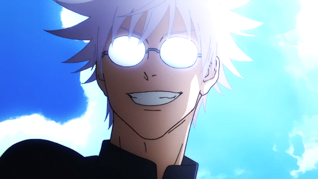
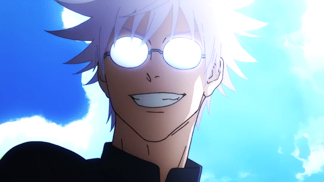
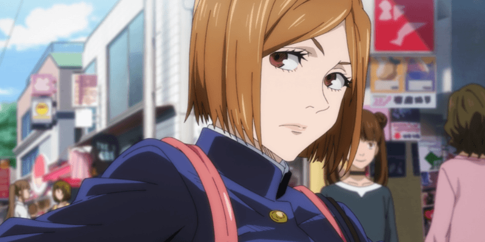
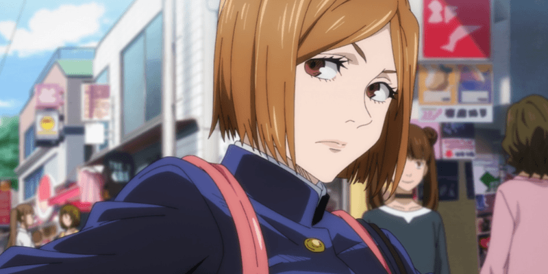

 



Sukuna
Sukuna é egoísta, de coração frio, imoral e excepcionalmente sádico. Quando ele reencarnou logo após Yuji ter ingerido seu dedo, ele comentou, sugerindo o massacre de mulheres e crianças e comparando-as a vermes rastejando. Devido ao seu imenso poder, ele raramente se preocupa com as consequências de suas ações, mesmo que elas afetem seu hospedeiro, Yuji Itadori. Na verdade, ele frequentemente provoca e insulta Yuji, chamando-o de pirralho e até mesmo rindo ou se divertindo com o desespero de Yuji em várias ocasiões.
Itadori
Yuji é uma pessoa justa que se preocupa muito não apenas com seus amigos, mas com qualquer pessoa que ele veja como pessoas com suas próprias vontades, apesar de quão profunda ou superficial seja sua conexão com eles. Ele se preocupa muito com o "valor de uma vida" e, para esse fim, garantirá que os outros recebam uma "morte justa".
Satoru Gojo
Satoru é um indivíduo complexo, já que normalmente é indiferente e brincalhão com pessoas como seus alunos, colegas (próximos) e amigos, mas antipático e cruel com pessoas como Executivos Feiticeiros. Ele está muito confiante em suas habilidades e reputação como um feiticeiro poderoso, casualmente descartando ameaças pessoais de Sukuna dizendo que ele poderia derrotar o Rei das Maldições facilmente.
Toge
Toge inicialmente parece ser um menino quieto e distante, um tanto intimidante para Yuta Okkotsu quando se conheceram. No entanto, por baixo de sua personalidade calma e um tanto indiferente, Toge é na verdade um indivíduo muito perspicaz e atencioso. Ele não fala para evitar amaldiçoar acidentalmente alguém com suas palavras encantadas.
Nobara
Nobara é uma jovem confiante e impetuosa com um caráter inabalável. Mais do que tudo, Nobara está determinada a permanecer fiel a si mesma, não importa o que aconteça. Ela tem muito orgulho de ser uma garota bonita e uma lutadora forte, recusando-se a deixar que alguém a influencie.
Fushiguro
Megumi é um indivíduo estóico, indiferente, e calculista. Ele geralmente tem uma expressão facial neutra que raramente muda, fazendo parecer que ele leva todas as situações a sério.
Maki
Maki é uma pessoa muito teimosa e direta, que tende a ser bem direta. Ela é obstinada e se motiva a escapar dos laços de sua Família de Feiticeiros. Por toda a sua vida, ela foi maltratada e rebaixada por ser uma mulher e não feiticeira pelos Zenins.